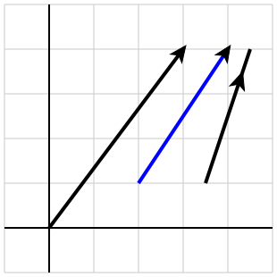
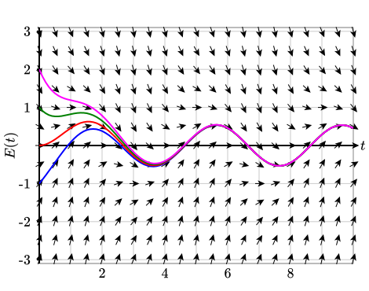
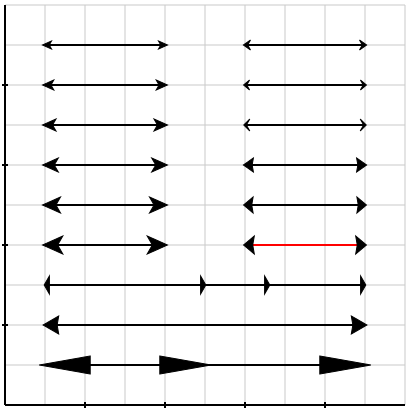
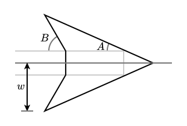

Section 4.3 Arrows
Arrows can appear in many different contexts within a PreFigure diagram. For instance, a
<vector> will be drawn with an arrowhead, usually at its tip, as seen in Figure 4.3.1. Most graphical components that define a path, such as a <polygon> and <parametric-curve>, can be decorated with arrows.
In constrast, a
<slope-field> may have many arrows, one on the end of each line segment, as shown in Figure 4.3.2 .
1
judsonbooks.org/ode-project/As a result, it is possible to adjust the relative size and shape of arrowheads. Before describing the possibilities, however, it is important to recognize that the size of arrowheads is scaled by the
@thickness attribute so, for instance, the arrowhead on a line whose @thickness=3 will be three times the size as one on a line whose @thickness=1.
Figure 4.3.3 shows a variety of choices for defining the appearance of arrowheads. Notice that there are two attributes,
@arrow-width and @arrow-angles, that can be specified and that are described more fully below.
<diagram dimensions="(400,400)" margins="5">
<coordinates bbox="(0,0,10,10)">
<grid-axes labels="no"/>
<!-- left side arrows -->
<line endpoints="((1,9),(4,9))" arrows="2"/>
<line endpoints="((1,8),(4,8))" arrows="2"
arrow-width="5"/>
<line endpoints="((1,7),(4,7))" arrows="2"
arrow-width="6"/>
<line endpoints="((1,6),(4,6))" arrows="2"
arrow-width="7"/>
<line endpoints="((1,5),(4,5))" arrows="2"
arrow-width="8"/>
<line endpoints="((1,4),(4,4))" arrows="2"
arrow-width="9"/>
<!-- right side arrows -->
<line endpoints="((6,9),(9,9))" arrows="2"
arrow-width="5" arrow-angles="(35,60)"/>
<line endpoints="((6,8),(9,8))" arrows="2"
arrow-width="5" arrow-angles="(40,60)"/>
<line endpoints="((6,7),(9,7))" arrows="2"
arrow-width="6" arrow-angles="(45,60)"/>
<line endpoints="((6,6),(9,6))" arrows="2"
arrow-width="7" arrow-angles="(35,80)"/>
<line endpoints="((6,5),(9,5))" arrows="2"
arrow-width="8" arrow-angles="(40,80)"/>
<line endpoints="((6,4),(9,4))" stroke="red" arrows="2"
arrow-width="9" arrow-angles="(40,80)"/>
<!-- longer line at the bottom -->
<line endpoints="((1,3),(9,3))" arrows="2"
additional-arrows="(0.7,0.5)"
arrow-width="9" arrow-angles="(60,90)"/>
<line endpoints="((1,2),(9,2))" arrows="2"
arrow-width="9" arrow-angles="(30,80)"/>
<line endpoints="((1,1),(9,1))" arrows="2"
arrow-width="9" arrow-angles="(10,90)"
additional-arrows="0.5"/>
</coordinates>
</diagram>
Notice that a
<line> has an @additional-arrows attribute that allows one to include arrowheads at various locations along the line. The locations are given as a number between 0 and 1 specifying the relative distance along the line segment.The shape of an arrowhead and how it is attached to the end of a path is shown in Figure 4.3.5. Once again, the size of the arrowhead is scaled by the package.)
@thickness of the path. (This style of arrowhead is adapted from Bill Casselman’s PiScript2
Figure 4.3.6 shows the meaning of the
@angle-width and @angle-angles attributes. The @angle-width, whose value is in SVG coordinates and whose default is 4, controls how far from the path the arrowhead extends. The @angle-angles attribute is a pair of angles \((A,B)\text{,}\) given in degrees. The default values are \((24,60)\text{.}\)

@arrow-width=w and @arrow-angles=(A,B).Defining these attributes in a publication file allows them to be applied to all the diagrams in a project.
As we will see later, these attributes are ignored when placing arrowheads in a tactile diagram since the shape of the arrowheads is a convention within the braille community.